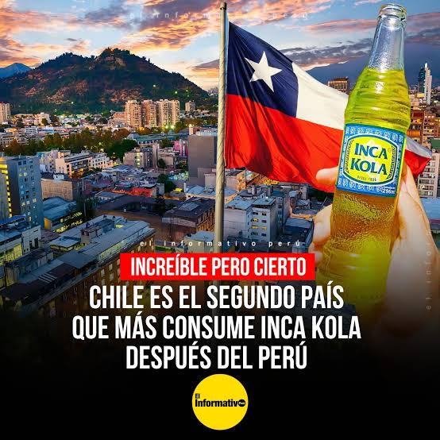

Conclusiones
Reflexiones Finales sobre la Estrategia Digital de Inca Kola
Resumen de Puntos Clave
Identidad Central
La estrategia gira en torno a la peruanidad y la cultura, cimentando su posición única.
Mix de Canales
Uso equilibrado de medios masivos (TV/Vía Pública) y digitales (Redes Sociales).
Enfoque Joven
Adaptación de contenido (TikTok, YouTube) para asegurar la relevancia intergeneracional.
Imagen de Refuerzo
